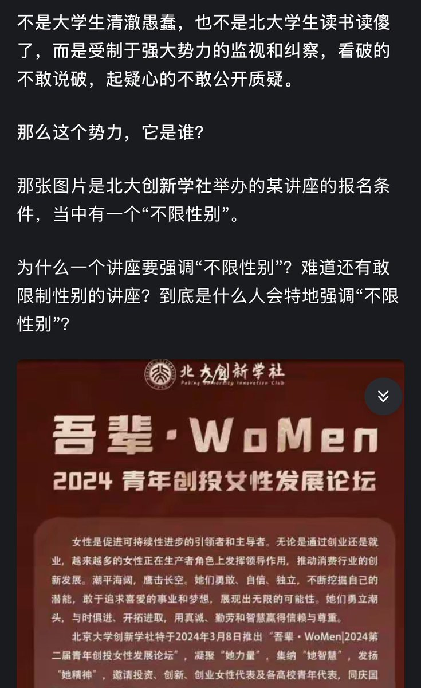

サイバー環状線
@CyberKanjousen
不是，这个人还和女权社团有关？
那么環状線的问题是，在当下「鹅腿阿姨」被质疑的时候，为什么这个社团看上去毫无作为呢？在以前，这个社团有过捂嘴行为吗？
環状線看完了这个知乎回答，環状線认为其中猜测虽然有道理，但是缺乏证据，而且这个社团看起来规模庞大，但如果参加过大学社团的话，就知道 大学社团和班级一样都输非常松散的团体，所以说这个女权社团很可能只是人多，但是其威慑作用大概没有回答中说的那么强大。

𝓛𝔂𝓷𝓷泠
@whitelightroses
@CyberKanjousen 按照某些说法她是被刻意炒作起来并且捂嘴控评的🤔
https://t.co/APhHToWNLL https://t.co/St1l046a8z